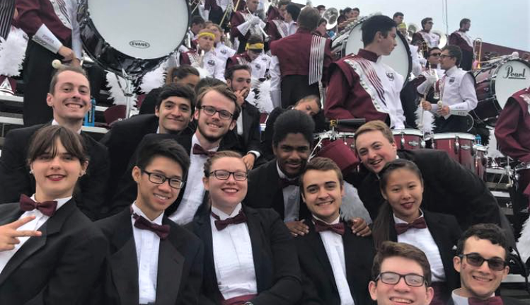

About Me
 Hi! My name is Laura O'Malley, and I'm currently a Junior English major at UMass Amherst. I am pursuing letters of specialization in the Study and Practice of Writing, Professional Writing and Technical Communication, and Creative Writing. I'm also working on an Information Technology minor and a Music minor in Percussion Performance. (The picture up top is a close up of Marimba keys).
My major has led me to be invested in finding ways to communicate clearly, and my specialization in Professional Writing and Technical Communication has allowed me to explore how I might extend that to technical or UX writing. I'm also passionate about alternate forms of communication, especially music. I love working collaboratively across artforms, and was fortunate enough to contribute to my friend Thomas Wilson's graduate recital in this way.
In my free time, I love reading and exploring western Mass. I'm also an active member of the University of Massachusetts Minuteman Marching Band as a member of the drumline.